Paper Reading：聊一聊MVCC
Paper Reading系列旨在分享著名Conference上发表的论文。VLDB（Very Large Data Bases）是数据库业界三大会议之一，其余两者为ICDE（The International Council for Open and Distance Education）和SIGMOD。
关于Paper
《An Empirical Evaluation of In-Memory Multi-Version Concurrency Control》 出自2017年VLDB，主要贡献是对主流的MVCC技术要点进行了完整的梳理，并且在自研的Peloton数据库实现了所有Approaches，用于固定变量进行横向测试对比。
有趣的是，论文最初投稿时使用的并不是这个标题。据Andrew Pavlo（论文作者之一，CMU Associate Professor）称他们给VLDB投稿时得到的Review反馈非常正面，除了要求改掉当时的标题：《This is the Best Paper Ever on In-Memory Multi-Version Concurrency Control》。
但是作者们还是想在这篇论文标题上得意洋洋一番，所以后续又以下图这些标题重新投递过两次。
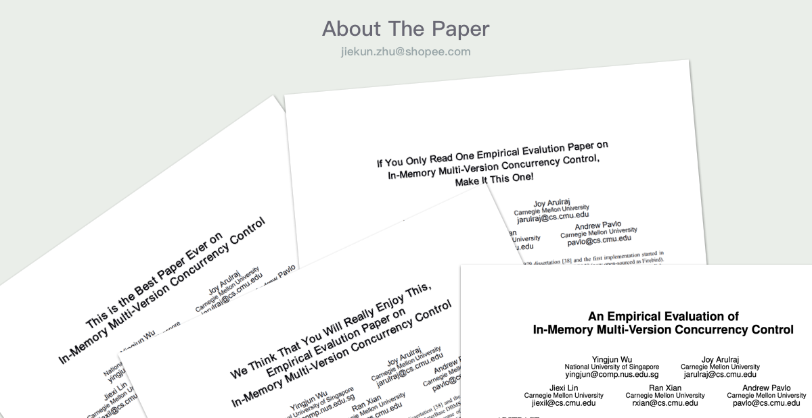 Fig 1: About The Paper
当然，这些主观性强的标题都是没办法发表的，最后他们也不得不改成了现在所见到的标题。
MVCC简介
MVCC（Multi-Version Concurrency Control）字面包含了两个方面的内容：
- Multi-Versioning：产生多版本的数据内容，使得读写可以不互相阻塞。
- Concurrency Control：并发控制，使得并行执行的内容能保持串行化结果。
例如，对于SQL：SELECT a FROM tab_1 where id = 1;，事务T1和T3可以访问到不同版本的数据结果：
+------------------------------------------------------------------------------------------------------------------+
| | T1 | T2 | T3 |
|---|-----------------------------------|--------------------------------------|-----------------------------------|
| 1 | BEGIN; | | |
| 2 | | BEGIN; | |
| 3 | | UPDATE tab_1 SET a = 2 WHERE id = 1; | |
| 4 | | COMMIT; | |
| 5 | | | BEGIN; |
| 6 | SELECT a FROM tab_1 WHERE id = 1; | | SELECT a FROM tab_1 WHERE id = 1; |
+------------------------------------------------------------------------------------------------------------------+
T1在T2前开启，T3在T2修改记录后开启，因此T1读到的是修改前的版本，T3读到的是commit后的版本。
MVCC的目的是让不同的事务都能运行在各自的快照版本数据下而不互相阻塞：写操作写操作可以生成新版本数据，而读操作仍能够读到旧的版本。目前很多主流的DBMS都支持MVCC，如：MySQL、Microsoft SQL Server、Oracle、Hekaton等。
虽然诞生已久，也有很多数据库支持，但是MVCC并没有一个“标准”的实现。不同的数据库在MVCC的设计上都有自己的权衡和取舍，不同的设计在不同场景下也有性能上的差异。
MVCC的实现主要可以分为四个关键模块设计：
- 并发控制协议
- 版本数据存储
- 垃圾清理机制
- 索引管理
我们后面将会逐一介绍不同模块的多种设计与实现。不过首先，让我们来认识一下为了支持MVCC，DMBS中需要补充什么样的元数据。
版本数据形式
从事务（transaction）维度和数据行（tuple）维度而言，为了支持MVCC，都需要引入特定的Metadata。
对于事务，DBMS需要提供一个唯一的标识符区分不同事务。这个标识符通常是单调递增的时间戳（可以是0、1、2的序号，也可以是真实时间），我们把它称作事务的ID。有了TID，DMBS可以用他们来标记数据行的版本。
对于数据行，DBMS需要以下4个字段来在并发事务中进行定位：
txn-id：事务ID，并可用作写锁begin-ts与end-ts：代表版本数据的生命周期pointer：指向同一行数据相邻（新/旧）版的指针，依靠指针，版本数据可以形成一个单向链表
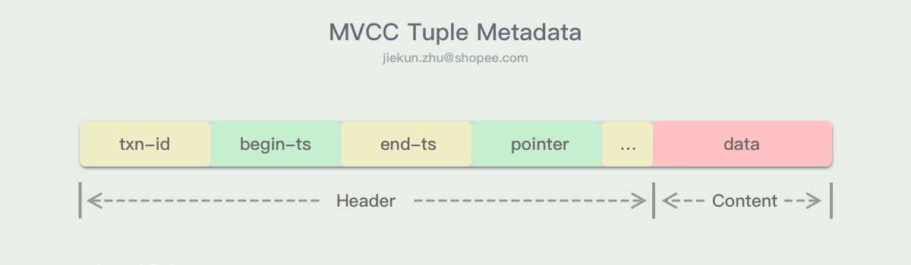 Fig 2: MVCC Metadata Sample
MVCC中的MV是通过版本数据行的这些Metadata实现的，如果我们把模型稍微简化一下，只要记录有begin-ts和end-ts，我们就可以通过对比他们与当前事务的TID判断出哪个版本行才是事务可见的。而CC的实现，实际上也可以独立于MV存在，例如通过Timestamp Ordering或Two-phase Locking保持事务的串行性。
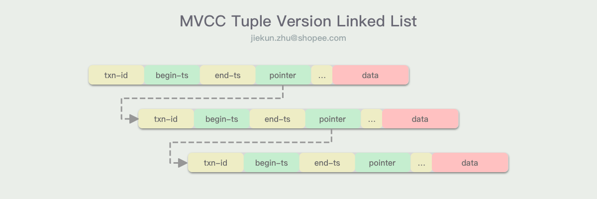 Fig 3: MVCC Tuple Linked List
并发控制协议
每个DBMS系统都需要有一套并发控制协议，这套协议需要做的事情有两个：
- 判定特定事务是否可以访问或修改特定版本的数据
- 判定特定事务是否可以提交它的改动
注意通过这套协议，MVCC解决的是不同事务间执行顺序和结果的问题（而不是多版本数据），也就是通过锁或者时间顺序保持串行性。本节中将介绍两种协议：MVTO和MV2PL，MVOCC与Serialization Certifier可以在论文中进一步了解。
Timestamp Ordering (MVTO)
MVTO的设计思路是依赖时间顺序保证事务的串行性执行结果：
- 写锁依然通过
txn-id来实现，只要txn-id不为0或者不为事务自己的TID，说明有其他事务进行了改动，第二个想进行改动的事务将会终止 - 读锁通过时间先后顺序保证，并发读的场景中互不阻塞，但是会将读取这个版本数据行的最大
TID进行记录，如果有未来事务进行了读取（尽管它已经发生，也就是发生在过去），那么当前事务将不能修改这行数据（不能新增版本数据行）
MVTO的实现关键在于借助事务的唯一标识符（TID，即时间戳）来计算不同事务的先后顺序。
在这个实现中，版本数据行除了上面提到的Metadata字段外，还引入了一个read-ts字段，它记录的是上一个读取它的事务TID。
当事务T对逻辑数据行A进行读操作时，DBMS需要根据当前的TID搜寻A合适的版本数据，使得TID落在begin-ts和end-ts之间。同时，事务T能读到的数据必须是txn-id为0或TID的，意味着数据行没有被其他事务加上写锁，因为MVTO不允许事务读取到未提交的改动。在读取A的版本数据Ax时，如果Ax的read-ts小于TID，则将该字段修改为TID。
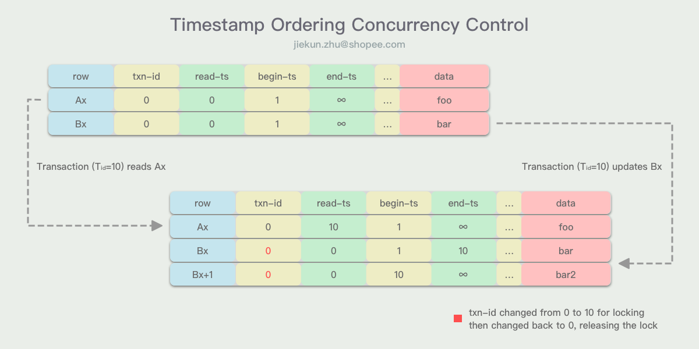 Fig 4: MVCC Timestamp Ordering Concurrency Control
在MVTO中，事务更新数据行的结果总是生成一个该数据行的最新版本。事务T在满足如下条件的时候，可以对版本Bx进行更新：
Bx版本数据没有被其他事务加上写锁TID必须大于等于Bx的read-ts，代表没有在TID之后的事务读了这行数据
更新时事务T会新增一个版本数据Bx+1，它的txn-id等于TID。在事务T提交的时候，Bx+1的begin-ts设为TID，end-ts设为INF，并且将上一个版本数据Bx的end-ts设为TID。
Two-phase Locking (MV2PL)
MV2PL仍然使用begin-ts和end-ts来决定版本记录是否可见。是否可读、可写，由读写锁来控制。
MV2PL使用read-cnt作为读锁，当寻找到对应版本行数据时，通过read-cnt加1可以给版本数据加读锁。同时，在版本数据持有写锁时，read-cnt不能进行递增。
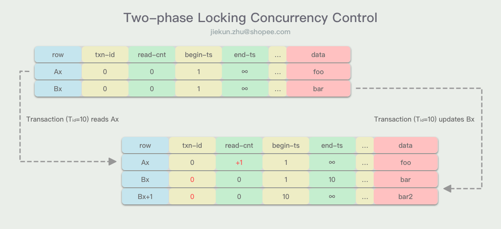 Fig 5: MVCC Two-phase Locking Concurrency Control
同样，使用txn-id作为写锁，写锁决定版本数据是否能被修改：
- 当版本数据的
txn-id为0或当前TID read-cnt为0
小结
MVTO和MV2PL数据行结构都非常相似，在上面的简述中可以看出只有read-ts和read-cnt区别。
由于read-ts规则的存在，未来开始的事务的读将会阻止前面开始的事务的写，因此MVTO的并发读写规则是以时间先后顺序来控制的，它虽然有锁的表现，但是本质是时间顺序的体现。
而在MV2PL中，read-cnt描述的是当前版本数据行的读锁个数，并不关心这些读锁是来自未来的事务还是以前的事务。因此read-cnt可以看作一个共享锁，与MVTO有本质区别。
版本数据存储
在MVCC中，每次的更新都会创建一个新的版本数据。版本数据行中的指针负责指向前一个版本的数据或后一个版本的数据，以此形成一个单向的版本链。版本链不能是双向链表，因为双向链表的修改操作需要加锁，不能借助原子指令完成。
主流的版本数据的存储Schema有多种，不过可以提前透露的是，Delta存储是最优的方案，InnoDB使用的就是Delta存储，Postgres使用了Append-only存储，而极少数的DBMS在使用Time-travel存储。我们将逐一介绍。
Append-only
Append-only将所有数据行的不同版本（包括master版本）都存放在同一块空间中（例如同一张表）。每当有逻辑数据更新时，DMBS在表中先请求一个数据行的空间，然后将最新版本的数据复制一份到新数据行空间中，最后将变更内容应用到这一行上。
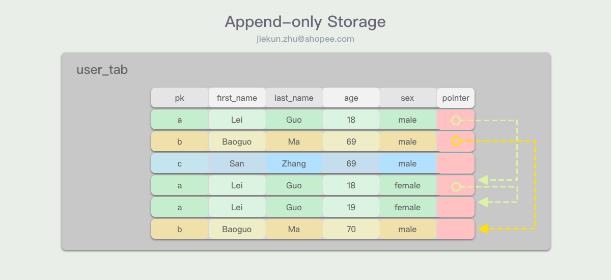 Fig 6: MVCC Append-only Storage
前面说过，因为锁的关系，没有办法维护一个双向链表的版本数据，那么版本数据的方向就变得非常重要：
- 如果版本数据是从老到新（O2N）排列的，那么每次获取较新的版本数据（大部分场景都是如此）都需要遍历整个链表
- 如果版本数据是从新到老（N2O）排列的，那么每次插入新的版本数据时，链表的起点都要发生变更
在O2N的方案中，由于无用版本遍历的存在，这种方案的性能高度依赖于版本数据的垃圾回收机制，如果垃圾回收能够将单链表维持在较短的长度，那么查询的性能是可以有提升的，否则就会很耗费时间。
而在N2O的方案中，也有方法可以减少变更起点的次数，就是采用一个映射entry代表链表的起点，这样当新版本数据产生时，只有entry指向的地址需要改变，而指向entry的索引则可以不发生变更。这种优化在辅助索引非常多的表上有很好的提升，但是会需要额外的存储空间。
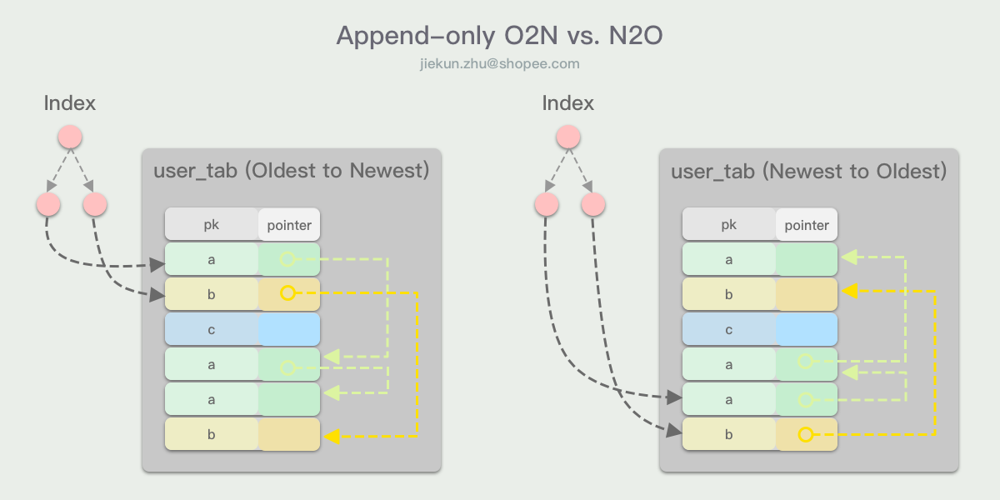 Fig 7: MVCC O2N vs. N2O
由于Append-only存储的是完整的数据行，即使数据行中只有少量字段发生了变更。这种行为在表中带有非内联数据（即数据不记录在tuple内，如BLOB、TEXT）时会导致引入大量的重复且大体积数据。其中一个优化方式是允许不同的版本数据行指向同一个BLOB、TEXT对象，并且增加cnt元数据来记录引用次数，便于GC处理。
Time-Travel
Time-Travel和Append-only的存储很相似，版本数据都是链表记录数据行，但是历史的版本数据与最新版本数据的存储空间分离开。在主表上，只有最新的master版本数据，而历史数据的链表存放在一张“Time-Travel”表中。
在更新逻辑行时，DBMS将master版本的数据复制进“Time-Travel”表中，然后原地更新主表中的数据行，形成新的版本数据。
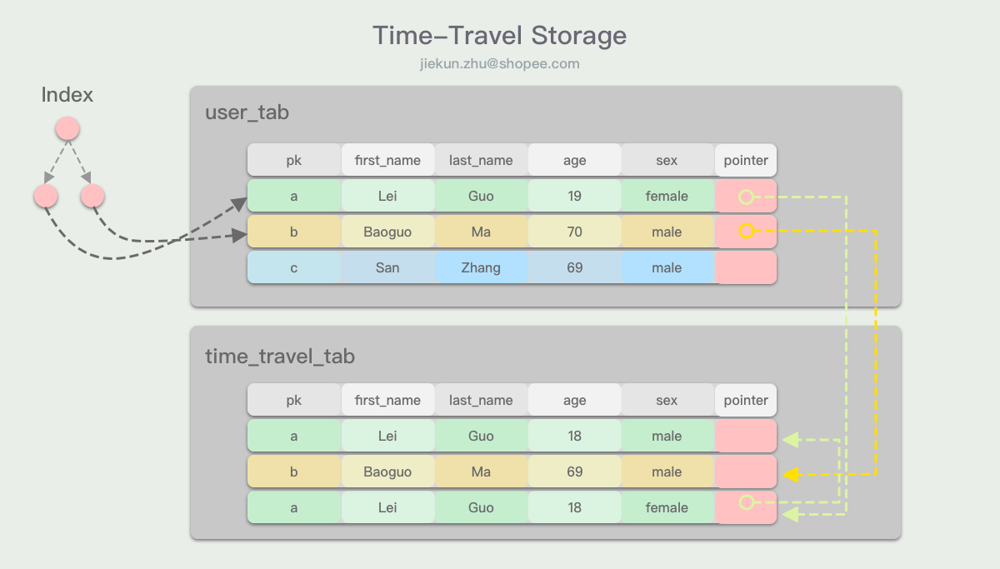 Fig 8: MVCC Time-Travel Storage
Time-Travel的设计可以避免索引上的指针频繁更新，因为他们始终指向主表上的master版本数据，并且数据原地更新，地址也没有发生变更。
但是因为版本数据存储的是完整tuple，因此也会有非内联数据的问题，同样，可以使用共享对象的方式进行优化。
Delta
最后介绍的Delta存储同样在主表上只维护master版本的数据，然后将版本数据存放在额外的“Delta”空间中。“Delta”空间在MySQL InnoDB和Oracle中指的就是用于rollback的数据段，例如InnoDB中的undo log。
在更新逻辑数据行时，DMBS同样先申请“delta”空间的位置，然后将被改动的属性的老版本数据写入其中，而不是完整的tuple行。最后DMBS在主表上原地更新master版本的数据。
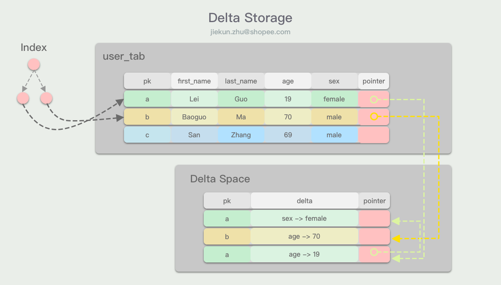 Fig 9: MVCC Delta Storage
Delta存储在记录版本数据时表现非常优秀，当UPDATE只操作了数据行的子集时，减少了内存的分配占用，也没有外联数据版本体积过大的问题。然而，在重度读的场景中，为了获得对应的版本数据，DMBS必须从各个字段的版本数据链中获取到对应版本的字段值，再进行拼凑，这就带来了一定的额外开销。
小结
由此可见，不同的版本数据存储方案都有各自适应的场景。例如Append-only存储在一些数据分析场景下更佳，因为版本数据存储在连续的空间中，当进行大范围的扫描时可以提高缓存的命中率，而且还可以配合硬件预读进行优化。另外，存储完整数据行的方案（Append-only、Time-Travel）可以暴露物理的版本数据给索引管理系统，为索引管理提供了更多可选的方案，而Delta存储中就没有物理的版本数据行，在以上方面的对比处于劣势。
垃圾清理机制
不断创建版本数据的好处在于，如果一直不进行清理的话，DBMS可以借助它们实现“Time Travel”，意味着可以访问任意时刻的数据快照。Postgre在之前的版本曾经这样做过，但是当他们意识到没有什么场景需要这种功能之后，在新版本就放弃支持了。
版本数据积累的坏处有很多，包括巨大的存储开销，极高的版本链遍历开销（也取决于版本链的方向和使用场景）。所以自然而然就需要有GC操作去释放这部分的空间。
GC可以分作3个步骤：
- 检测过时版本
- 在链表中将它们断开连接（移除链表元素）
- 释放空间
检测过时版本数据有很多方法，例如检测版本行是否由异常的事务创建，或者检查版本行是否对所有活跃事务都不可见。对于后者，可以通过比较版本行的end-ts和活跃事务的TID来实现。DBMS通常可以把事务信息集中存储，但在多核系统上这会是扩展性的一个瓶颈。
有了检测方法之后，DMBS可以从不同的维度去寻找这些过时版本，比如从版本数据行出发，以及从事务出发。
Tuple-level
论文中介绍了两种数据行维度的GC方法，VAC和COOP。
Background Vacuuming（VAC）使用一个后台线程，周期性地扫描数据库以寻找过时的版本。这种方案最简单的实现就是遍历版本数据链表，但是这样做的GC性能很难在数据量增长时同步提升，我们需要减少无目的的遍历，或者让遍历范围能缩小下来。一种优化的方案是让DBMS维护一个bitmap，映射包含改动过数据的block，这样后台的vacuum线程就可以跳过上一次GC以来没有发生数据变更的block。
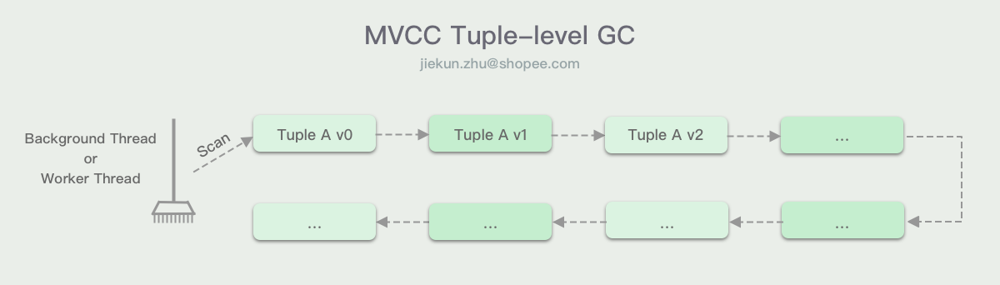 Fig 10: MVCC Tuple-level GC
Cooperative Cleaning（COOP）的思路是改用worker线程进行GC。寻找版本数据时，worker线程也需要跟着版本链表进行遍历，在遍历过程中，如果发现过时版本数据，就直接进行清理。这种方案会存在两个问题：
- 只支持O2N的版本数据记录方式，否则worker线程每次遍历的都是靠前的活跃版本数据，找到目标后就停止，不能发现过时数据
- 存在“dusty corners”问题，GC与查询任务关联在一起，因此如果逻辑数据创建有多个版本数据后，就没有发生过任何查询，那么这些版本数据就一直没办法得到清理。一般DBMS会通过结合VAC来处理这部分的数据
Transaction-level
事务维度的GC一般通过事务记录它读写数据行的集合，DBMS需要监控集合中的版本数据是否都过时了。当某个事务的版本数据集合对所有的活跃事务都不可见时，就可以将这个集合中的版本数据都进行GC清理。
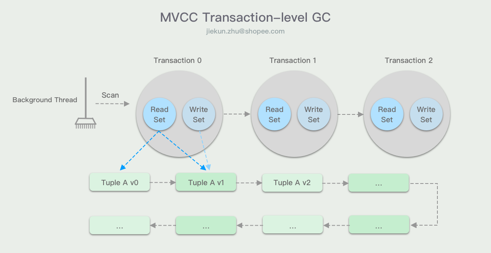 Fig 11: MVCC Transaction-level GC
小结
Tuple-level的VAC是最常用的版本数据清理方案，通过增加GC线程的数量可以提升它的性能。但是对比Transaction-level GC，这种方案在出现长事务的时候会对性能有较大的影响，因为长事务意味着它开始之后的所有版本数据都得不到清理，这时候版本数据链就会变得很长，直到长事务提交或者中止。
索引管理
所有支持MVCC的DBMSs都将版本数据和索引数据分开存储。我们可以将索引看作KV键值对，键是被索引的数据行中的字段值（例如ID），值是索引对应的数据行的指针。
主键索引的情况比较简单，因为主键（同时也是索引的Key）是保持不变的，索引的Value总是指向版本数据链的起点，比如在InnoDB中，主键索引的数据行就是指向主表的。在主键索引中，索引的键值对指针会发生什么样的变更，取决于DBMS使用了哪种的数据存储方式。
对于Delta存储，我们上面讨论过，主表永远都是存的master版本数据，它是原地更新的，因此在更新数据时，主表中的数据行位置不发生改变，因此索引Value的指针也没有发生改变。
对于Append-only的存储，版本数据链有两种不同的方向：
- O2N，新的版本数据Append在版本链的末端，因此索引的Value指针始终指向链表的起点不变；只有在发生GC的时候才会调整指针地址
- N2O，每当产生新版本时，都需要调整索引值的指针，此时DBMS一般会在索引上进行DELETE & INSERT的操作完成调整
对于辅助索引，被索引的字段值（同时也是索引中的Key）可能改变，索引的Value指向的版本数据也有可能改变。因此有不同的方案对索引中的指针进行管理。
Logical Pointers
最常用的方案是建立一层中间表，让索引的Value能够一直不变，例如指向主键。这种方案也是InnoDB在使用的，所以我们通常说辅助索引会包含被索引值以及主键值。通过主键值将索引中的指针固定下来，这样每当版本数据链表起点发生改变时，只需要同时更新主键值对应的指针。虽然只有一个辅助索引时，听起来改动的复杂度是相同的，都是改变了1处指针，但是当有许多辅助索引时，就会是O(1) vs. O(n)的差异了。
借助主键的坏处是辅助索引的体积会随着主键体积发生变化，另一个方案是为逻辑tuple提供64-bit的唯一ID。实际上思路并没有区别，都是在物理版本链和索引之间增加了一层映射，只是看映射的内容如何选取一个唯一固定、节约空间的值。
Physical Pointers
Uber曾经发过一篇文章：《Why Uber Engineering Switched from Postgres to MySQL》，实际上他们并不是一开始就在用Postgres。Uber最早使用的也是MySQL，中途招了一些热衷于Postgres的工程师，所以他们就从MySQL切到了Postgres。他们在表中加了非常多的辅助索引，在使用过程中发现，Postgres的辅助索引是指向磁盘中的版本链起点的，在版本链起点发生变动时，多个辅助索引的指针就要发生修改。在Append-only的存储方式下，这种设计的好处是没有通过中间层映射（例如主键ID）回表查询，坏处也非常明显，当辅助索引非常多的时候，版本数据链起点的变更将会导致所有辅助索引的指针都需要更新。
目前还有一些DBMS使用了这种方案，例如MemSQL、Hekaton。如果Uber的工程师有读过这篇论文，他们可能可以节约不少的迁移成本。
小结
同样，不同的管理方式也有各自适合的场景。对于Logical Pointer，在写入频繁的场景下表现更好，因为辅助索引只需要在索引字段值发生改变时才会改变，在读取场景下，它还需要对不同的版本链进行对比，因为同一个逻辑值有可能对应不同的物理值，例如DELETE后再INSERT同一个值；对于Physical Pointers，缺点之前已经提到过，频繁的更新场景会导致写入性能变差，但是在检索时就会有它的优势。
另外，在支持MVCC的DBMS中，所谓的“覆盖索引”其实并不能通过扫描单个索引得到Query结果，因为索引里面并没有版本数据。对于Append-only的设计，回到主表进行检索是必须的；而对于Delta存储，至少也需要在Delta空间（例如undo log）中查找对应版本。
总结
论文对MVCC的4个要点进行了分类总结：
- 并发控制协议：MVTO、MVOCC、MV2PL和Serialization Certifier
- 版本数据存储：Append-only、Time-Travel和Delta
- 垃圾清理机制：Tuple-level和Transaction-level
- 索引管理：Logical Pointers和Physical Pointers
意在说明MVCC并没有一套标准的实现，不同的实现之间针对具体场景Workload的不同也有着不同的表现。在Paper Reading中我们并没有展示论文中不同Approaches的测试结果，关心的同学可以在文末的链接找到原文查看。
另外，尽管可以从不同的DBMS中总结出一些共用的实现方案，但是它们各自都有进一步地做不同的优化，例如InnoDB中的undo log管理与GC就比原文的概述复杂得多。
References
[1] Y. Wu, An Empirical Evaluation of In-Memory Multi-Version Concurrency Control. In VLDB 2017.
[2] J. Böttcher, Scalable Garbage Collection for In-Memory MVCC Systems. In VLDB 2019.